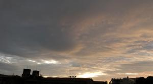
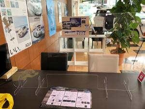

うるがいの話 ある日
最新: 軽石うるがいとは 前提知識です
カニの画像をクリックすると『うるがいの話』サイトを表示します|
|
【うるがいの話】 うるがい(ｳﾙｶﾞｲ urugai)とは、『もずくがに』の名前でとても大きくなります。 |
|---|---|
|
|
【Got cat カミマヤーの話】 たながー（ﾀﾅｶﾞｰtanagaa）とは手長えびのことで、何種類かあり大きいのは車 エビぐらいになります。 |

|
【ぶながぁの話】 ぶながー(bunagaa)とは、赤い髪の毛、赤い身体、そして身長は１ｍ２０ｃｍ ぐらい、川の蟹を食べているの目撃された。場所は沖縄県国頭郡大宜味村のと ある村僕の隣近所に住んでいる爺さんから、聞いた話です。 |
|
|
【ギーマの話】 ギーマ(giima)とは、山原の里山に咲くスズランに似た、 花を付けます。実は食べられます、 気が付くと口の周りが紫になっています。 |
2021年10月24日 (日）軽石
16:36
 
大量の軽石が、海岸に流れてついて問題になっている。村の浜でも、時々軽石
が大量にあった時があった。その時も、小笠原諸島近海の海底火山の噴火で噴
出したものが流れついたのだろうか。運動で走り過ぎると、足のかかとの角質
が硬くなり、時々刃物で切り落としていた。そして、仕上げは軽石で滑らかに
していた。昨夜、子供が家を訪ねてきた。ビットコインを３千円購入したとの
こと（無収入なのにとツッコミは入れなかった）、オヤジも只今勉強中で、そ
のうち投資するぜと話する。診療内科の先生からは、来年から就活できそうだ
と言われらしい。いま、illustratorをパソコンにインストールし勉強している
らしい（月額３千円とのこと、無収入なのに）。今日、新車購入の相談でトヨ
タの販売店へいく。そろそろ、買わないと・・・・。